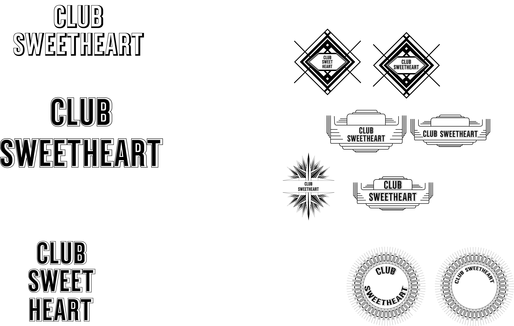
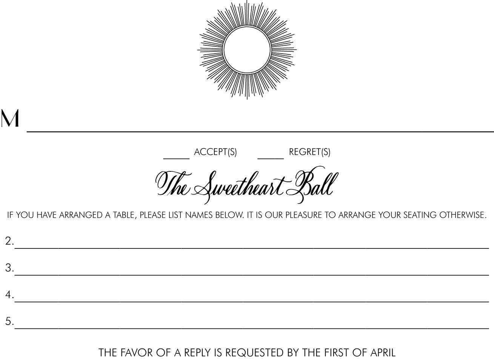
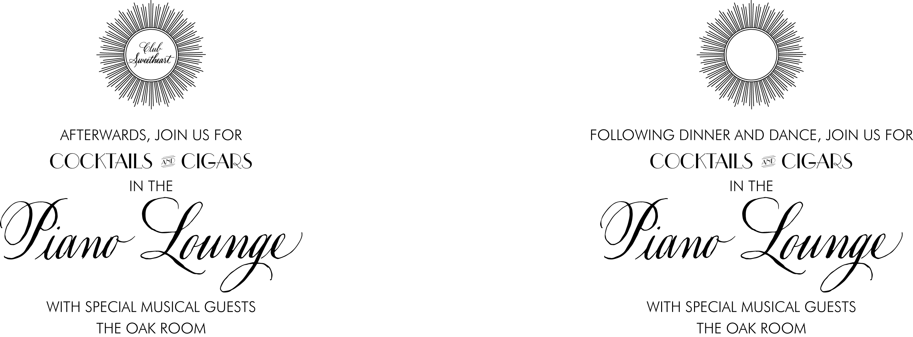
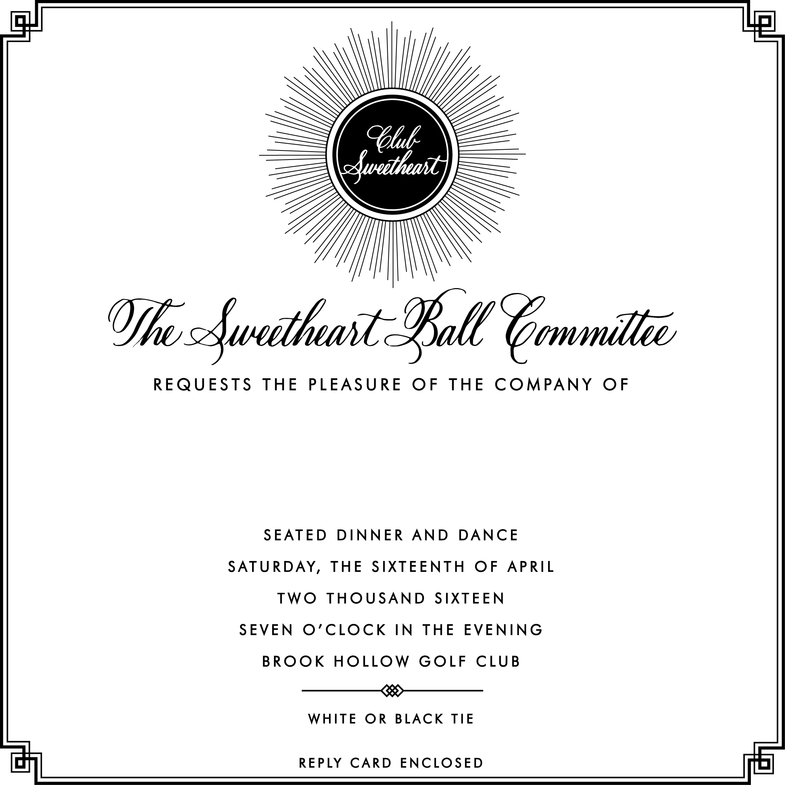
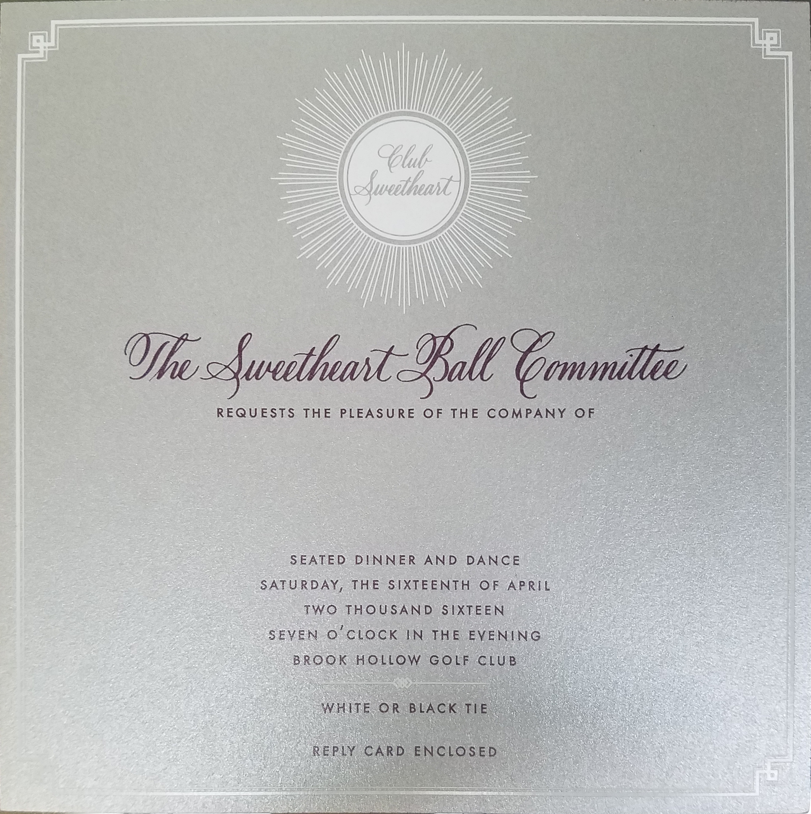

User Experience Design
Sweetheart Ball Design
Recently I have been exploring design methodologies for different designs I work on. Here are a few sketches of my design process. For this project, I was tasked with assisting in creating designs and invitations for Sweetheart Ball for the past few years. This is a set we did a few years ago which had the most amount of work to be created and processes done.
Understand
First I needed to not only analyzed Sweetheart Ball's needs, but also why their theme was chosen.
Research
I cooperated and coordinated with the main heads of the organization on what they were looking for in regards to their look and logo style. They brought in many logo designs and color options and I created the various styles with their chosen fonts and name style.
Design
I chose to give them many options on how to place the "Club Sweetheart" name as well as all the various logo styles they had brought in and also researched a few art deco styles myself and created many options for them to ponder on. In the end we went with a design which was simple but still had the art deco feel.
Implement
Once a logo design and font styles were chosen, I proceeded to create a full invitation set which included a reply set and after party cards.

For the after party, they wanted two options for the wording so I created both and afterwards one was chosen.
These are the designs for the reply envelope and invitation envelope

Once all the designs were finalized, they were sent out to a vendor to be white engraved and purple letterpressed with plum edge painting on a silver card. The reply card and after party card were also the same way. The envelopes were white engraved with plum liner.

App Design
Recently I took a class on Interaction Design and learned about the processes and techniques used in this aspect of design, and opened my eyes to a new project world.
Understand
I was unsure at the time of what I wanted to design for this project. After talking to friends and going through pages of ideas anf thoughts, I settled on a niche app which would have a direct target audience but also reach a large amount of people. My app idea is an app which would consolidate the searching of trading card game (TCG) cards.
Research
Currently, the biggest site for the majority of TCG cards is a site called TCGPlayer. Besides this site, players can also find cards on ebay or possibly even Amazon. Besides buying singles from these sites, players can also buy singles from vendors at large tournaments or obtain them through buying packs and hoping for the cards they want. Although most people do buy from TCGPlayer, there is still a large number of people who search through multiple sites for the best prices. In my app users would be able to search for cards, view and purchase cards from multiple sites and find the best prices.
Design
I based my design on the look and feel of the TCGPlayer design and added a custom logo and a simple bottom based menu bar.